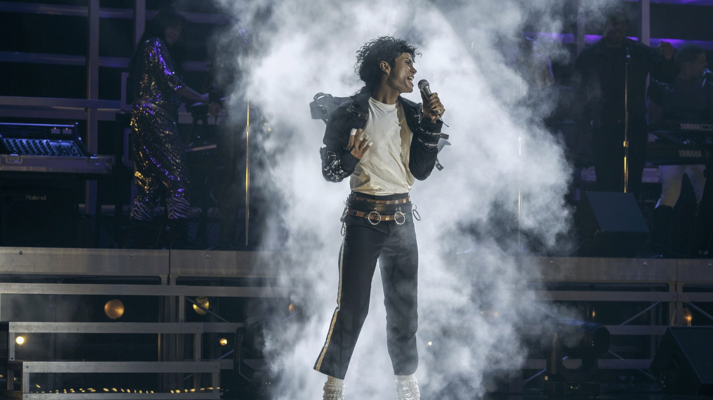
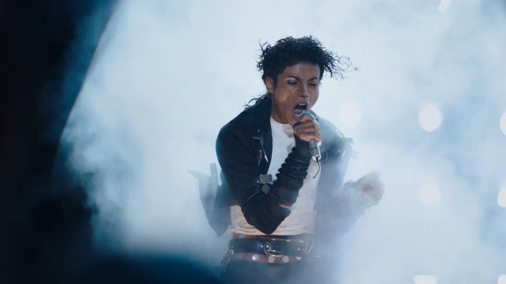

Michael: 6 curiosità sul film su Michael Jackson
Un nipote scelto dopo due anni di provini, una clausola legale che ha costretto a rifare il finale, uscite spostate più volte e un incasso da oltre un miliardo: il biopic di Antoine Fuqua visto da dietro le quinte, senza anticipare la trama
Il film su Michael Jackson è stato annunciato nel novembre 2019 ed è arrivato in sala ad aprile 2026, dopo una scelta di casting difficile, un cambio di direttore della fotografia, due slittamenti di data e un copione da rimettere in piedi a lavorazione finita. Il risultato è un biopic che ha diviso la critica e conquistato il pubblico. Ecco sei cose da sapere sul film di Antoine Fuqua, senza anticipare nulla della trama. Se volete prima il nostro giudizio, trovate la nostra recensione di Michael.
Perché a interpretarlo è il nipote?
Jaafar Jackson, figlio di Jermaine e nato a Los Angeles il 25 luglio 1996, è stato scelto per la parte dell'adulto Michael nel gennaio 2023, dopo una ricerca durata circa due anni. Il produttore Graham King ha parlato di una «ricerca globale» e ha insistito sul fatto che la decisione sia stata presa per il talento, non per il cognome. Katherine Jackson, la madre di Michael, ha approvato la scelta dicendo che il nipote lo «incarna». Prima di questo ruolo Jaafar aveva fatto soprattutto la reality di famiglia Living with the Jacksons (2015) e aveva pubblicato nel 2019 il singolo Got Me Singing: per lui è di fatto il debutto da protagonista. Il giovane Michael è invece Juliano Valdi, annunciato nel gennaio 2024 al suo primo film.

Quale clausola ha costretto a cambiare il copione?
È la parte più discussa della lavorazione. Secondo Wikipedia, a riprese concluse il team legale dell'eredità Jackson si è accorto di un accordo transattivo che vietava di rappresentare le accuse del 1993: da lì sono saltati i riferimenti al caso e, nella versione inglese dell'enciclopedia, anche scene del terzo atto originale, compreso il personaggio dell'avvocato Johnnie Cochran con Derek Luke. Per rimediare sono servite 22 giornate di riprese aggiuntive nel giugno 2025, con un costo aggiuntivo stimato tra 10 e 15 milioni di dollari, finanziato secondo Variety (citata da Wikipedia) dall'eredità. È anche il motivo per cui molti critici hanno definito il film «edulcorato». Noi lo segnaliamo come dato di lavorazione, non come giudizio: sapere come è nato il copione aiuta a capire cosa il film sceglie di raccontare e cosa no.
Perché l'uscita è slittata due volte?
Il film doveva arrivare nelle sale statunitensi il 18 aprile 2025, poi la data è stata spostata al 3 ottobre 2025 e infine al 24 aprile 2026. La riscrittura e le riprese aggiuntive spiegano buona parte del ritardo. In Italia il film è uscito con Universal Pictures ad aprile 2026; nel Regno Unito era arrivato il 22 aprile. Quello che si vede in sala dura 127 minuti secondo TMDB, ma Wikipedia parla di una prima versione montata di circa tre ore e mezza: secondo l'enciclopedia circa il 30% di quel materiale potrebbe essere riutilizzato in un eventuale seguito.
Chi ha fotografato il film?
Dion Beebe. Non era la prima scelta: il direttore della fotografia inizialmente coinvolto era Robert Richardson, che ha lasciato il progetto per lavorare a The Movie Critic di Quentin Tarantino. Le riprese principali sono durate dal gennaio al 30 maggio 2024. Tra i luoghi indicati da Wikipedia in italiano c'è la proprietà di Hayvenhurst a Encino, dove si è girato dal 18 al 22 marzo 2024.
Com'è stato rifatto Thriller?
Per la ricostruzione del videoclip più famoso della storia pop la produzione ha girato in Union Pacific Avenue, a Los Angeles, dal 24 al 29 maggio 2024. L'originale è un cortometraggio horror di 13 minuti diretto da John Landis, andato in onda su MTV il 2 dicembre 1983. Michael Jackson contattò Landis dopo aver visto Un lupo mannaro americano a Londra (1981); la casa discografica rifiutò di finanziare il progetto e per raccogliere i fondi venne realizzato un documentario sul making of, che ha venduto oltre un milione di copie. La voce parlata di Vincent Price alla fine del brano, secondo il produttore Quincy Jones, fu registrata in due sole riprese. Nel 2009 Thriller è stato il primo videoclip inserito nel National Film Registry.
Quanto ha incassato e come è stato accolto?
Secondo Box Office Mojo, a ottobre 2026 il film ha incassato 1.028.703.388 dollari nel mondo, di cui 372,3 milioni in Nord America, con un'apertura americana di 97,2 milioni e un budget di 155 milioni. Wikipedia lo indica come primo biopic a superare il miliardo e come film Lionsgate di maggior incasso. Con la critica è andata diversamente: sempre secondo Wikipedia, a ottobre 2026 Rotten Tomatoes riporta il 38% di recensioni positive (307 critici) e Metacritic 39 su 100, mentre il pubblico gli ha dato A– al CinemaScore. Owen Gleiberman su Variety ne ha lodato l'efficacia e l'interpretazione di Jaafar; Peter Bradshaw sul Guardian gli ha dato due stelle su cinque giudicandolo superficiale. Un film in cui la distanza tra pubblico e critica è la vera notizia.
Dove si può vedere?
A ottobre 2026 TMDB indica il film solo in noleggio digitale in Italia, su Apple TV Store, Rakuten TV, Amazon Video e CHILI; le disponibilità cambiano spesso, quindi controllate prima di cercarlo. Se vi piacciono i film girati con grande cura dietro le quinte, leggete anche il nostro approfondimento su Ryan Coogler: da Fruitvale Station a Sinners, un altro autore che ha fatto della musica il cuore di un film.
Domande frequenti
Quando è uscito Michael in Italia?
Ad aprile 2026 con Universal Pictures. Nel Regno Unito è uscito il 22 aprile e negli Stati Uniti il 24 aprile 2026.
Chi interpreta Michael Jackson nel film?
L'adulto è interpretato dal nipote Jaafar Jackson; il giovane Michael da Juliano Valdi. Il regista è Antoine Fuqua e la sceneggiatura è di John Logan.
Michael è stato girato di nuovo dopo le riprese principali?
Sì: nel giugno 2025 ci sono state 22 giornate di riprese aggiuntive, dopo la scoperta di una clausola legale che impediva di rappresentare le accuse del 1993.